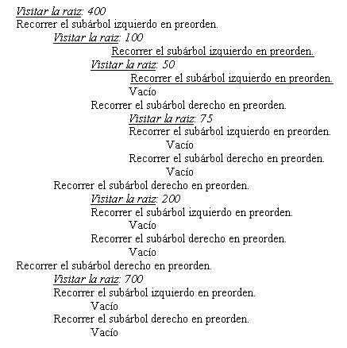
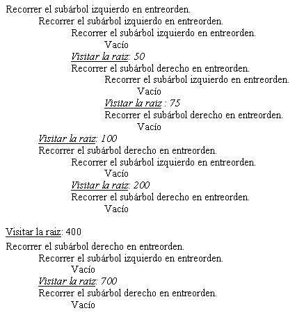
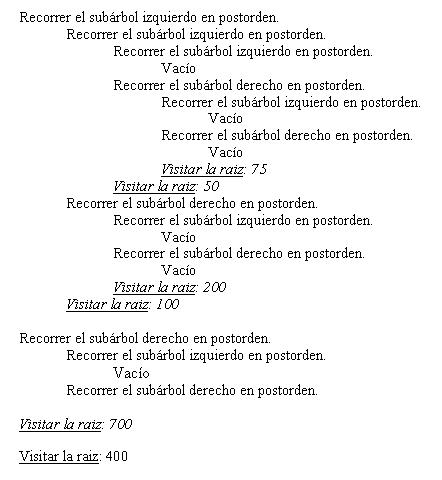

Para administrar un árbol binario ordenado debemos tener especial cuidado en la inserción.
Inicialmente el árbol está vacío, es decir raíz apunta a null:

Insertamos el 400

Insertamos el valor 100. Debemos analizar si raíz es distinto a null verificamos si 100 es mayor o menor a la información del nodo apuntado por raíz, en este caso es menor y como el subárbol izquierdo es null debemos insertarlo allí.

Insertamos el 200. Hay que tener en cuenta que siempre comenzamos las comparaciones a partir de raíz. El 200 es menor que 400, descendemos por el subárbol izquierdo. Luego analizamos y vemos que el 200 es mayor a 100, debemos avanzar por derecha. Como el subárbol derecho es null lo insertamos en dicha posición.

Insertamos el 700 y el árbol será:

Como podemos observar si cada vez que insertamos un nodo respetamos este algoritmo siempre estaremos en presencia de un árbol binario ordenado. Posteriormente veremos el algoritmo en java para la inserción de información en el árbol.
Búsqueda de información en un árbol binario ordenado.
Este es una de los principales usos de los árboles binarios.
Para realizar una búsqueda debemos ir comparando la información a buscar y descender por el subárbol izquierdo o derecho según corresponda.
Ej. Si en el árbol anterior necesitamos verificar si está almacenado el 700, primero verificamos si la información del nodo apuntado por raíz es 700, en caso negativo verificamos si la información a buscar (700) es mayor a la información de dicho nodo (400) en caso afirmativo descendemos por el subárbol derecho en caso contrario descendemos por el subárbol izquierdo.
Este proceso lo repetimos hasta encontrar la información buscada o encontrar un subárbol vacío.
Recorridos de árboles binarios.
Recorrer: Pasar a través del árbol enumerando cada uno de sus nodos una vez.
Visitar: Realizar algún procesamiento del nodo.
Los árboles pueden ser recorridos en varios órdenes:
Pre-orden:
- Visitar la raíz.
- Recorrer el subárbol izquierdo en pre-orden.
- Recorrer el subárbol derecho en pre-orden.
Entre-orden
- Recorrer el subárbol izquierdo en entre-orden.
- Visitar la raíz.
- Recorrer el subárbol derecho en entre-orden.
Post-orden
- Recorrer el subárbol izquierdo en post-orden.
- Recorrer el subárbol derecho en post-orden.
- Visitar la raíz.
Ejemplo:

Veamos como se imprimen las informaciones de los nodos según su recorrido:
Recorrido preorden:
Es decir que el orden de impresión de la información es:
400 ? 100 ?50 ? 75 ?200 ? 700
Es importante analizar que el recorrido de árboles es recursivo. Recorrer un subárbol es semejante a recorrer un árbol.
Es buena práctica dibujar el árbol en un papel y hacer el seguimiento del recorrido y las visitas a cada nodo.
Recorrido entreorden:
Es decir que el orden de impresión de la información es:
50 ?75 ? 100 ?200 ? 400 ? 700
Si observamos podemos ver que la información aparece ordenada.
Este tipo de recorrido es muy útil cuando queremos procesar la información del árbol en orden.
Recorrido postorden:
Es decir que el orden de impresión de la información es:
75 ? 50 ? 200 ? 100 ? 700 ? 400